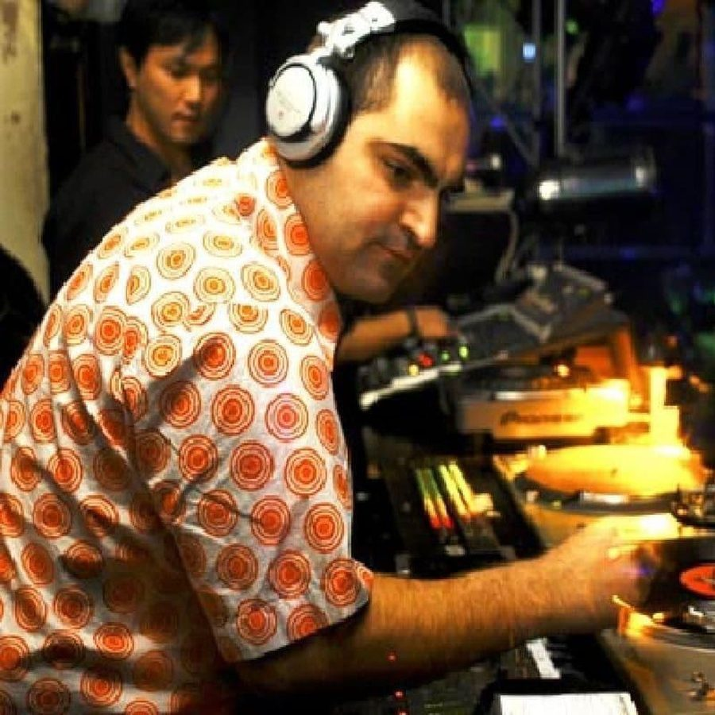

Various Artists - Balance006: Anthony Pappa


(EQ/Stomp Records)
The whole world seemed to turn against progressive in 2002: while merely a year ago it had been unstoppable in clubs around the globe, by that stage it was being blamed for everything from the death of dance music to the state of the world economy post September 11. But one DJ who managed to retain our interest even when progressive was at its most plodding was Anthony Pappa. The Aussie legend has kept a low profile of late, but with progressive making somewhat of a comeback, what better time for him to release a new mix CD? Following on from superb efforts from Phil K and James Holden, Balance 06 is the latest in the esteemed compilation series.
As someone who won the prestigious DMC Mixing Championships at the tender age of 15, Pappa’s technical skills are incredible as ever. Truly a master behind the decks, Pappa really does know better than anyone else how to construct a flawlessly smooth journey. Any DJ worth his salt mixes in key, but Pappa takes it to ridiculously proficient levels with his unparalleled programming abilities. The way he manages to merge the sounds and textures really has to be heard to be believed, and with his incredible ear for detail, his choices of tracks are all from producers who know exactly what they’re doing. But Anthony Pappa’s appetite for deliciously twisted music is as strong as ever, and the excursions into nastiness on the second CD are likely to alienate some listeners.
The first CD of Balance 06 is an unexpected exploration into ambient breakbeat sounds, and is extremely impressive from the outset. Quickly settling into a laidback groove, it all exudes a blissfully relaxed vibe not too dissimilar to a Northern Exposure mix or a Back to Mine compilation. It’s all melodic, it’s all uplifting, and it’s all breaks. That’s right, not a single house beat to be found on the entire CD. An offering from man-of-the-moment Luke Chable with Into the Storm is certainly a good way to start the proceedings. Washing over you with a dreamy three-minute build-up, you simply aren’t able to resist its ethereal charms. It all makes for a very smooth, laidback journey - perfect mixing, slick programming, cutting edge sounds that are forward thinking and extremely fresh. Infiltrating your headspace in a heavenly fashion, it’s an incredibly well balanced mix that skilfully shifts from sound to sound. One track may feature beautifully subdued vocals, while the next moves onto the epic, bombastic sounds of Steve May’s Open Day. The deliciously funky Underground Sound from Rhino Drum’s features smooth, sexy breaks that crescendo into an acidy peak, while the soaring soundscapes of Slacker’s Tutikinegi and Shiloh’s Mana are both magnificent. All in all it flows superbly, and makes for one very powerful, emotional trip.
But if the first CD is ambient, lush and accessible, the second could only be described as… different. Slow, deep, and very, very nasty, the operative word here would have to be twisted. In fact, listening to it just about makes you feel like you’ve been pushed into the k-hole. From the slow beginnings of Pavel Bidlo’s My Pills, to the deep rumbling basslines of Rennie Pilgrim’s Coming Up for Air, it only moves into even heavier territory. The price of all this nastiness is that it’s not what you’d call easy listening - not by a long shot. Frankly, it comes across as quite bizarre in some places: listening to Moonface’s Our Prediction makes you shake your head in something close to confusion. But after several listens, the obtuseness begins to sink in and make sense. Before you know it the music has gotten under your skin, and you’ve been hypnotised by its deepness. And besides, underneath all the dark and foreboding sounds remains the cool, slick club beats to keep things moving. It’ll make you remember why Anthony Pappa is so damn good: nobody does plod better than him. And this is helped along by the sublimely euphoric twist the mix takes towards the end with tracks like Musgrove & McGrath’s Freakout, and the liquid progressive blast of John Graham & John Sutton’s Cold Rush.
Considering the quality of some of Pappa’s recent mixes circulating on the internet, I was hoping for something with a little more progressive energy from his latest offering. As it is, Balance 06 is technically brilliant, but loses the listener a little along the way. Progressive breaks seem to be where all the action is happening currently, so while the first CD sounds fresh and innovative, demonstrating Pappa’s ability to deliver rich uplifting emotion, the second could easily be mistaken for his last mix CD. But herein lies the challenge: if you give it time to sink in, it pays dividends. And even when Pappa is frustrating the hell out of you with his twisted sounds, it’s hard to criticise him because he does it with so much more class and style than anyone else. Don’t let cultural cringe fool you – Aussie boy Anthony Pappa is a full-fledged member of the progressive mafia along with Sasha, Digweed and the rest of them. Don’t doubt it.